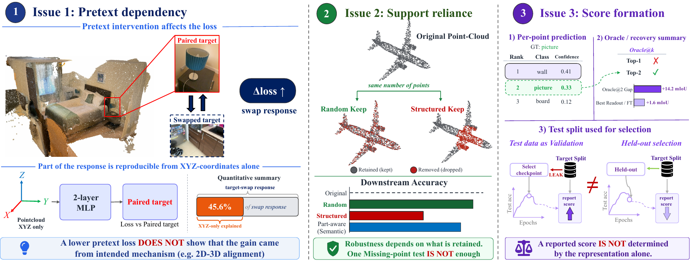

NeurIPS 2026 · Evaluations & Datasets Track · Spotlight
What Downstream Scores Miss in Point-Cloud Self-Supervised Learning

Overview
Downstream scores measure performance, but do not by themselves explain the source of a gain. We study controlled diagnostics for the pretext dependency, the visible geometric support, and the downstream readout in point-cloud self-supervised learning.
Paper and code links will be added when available.